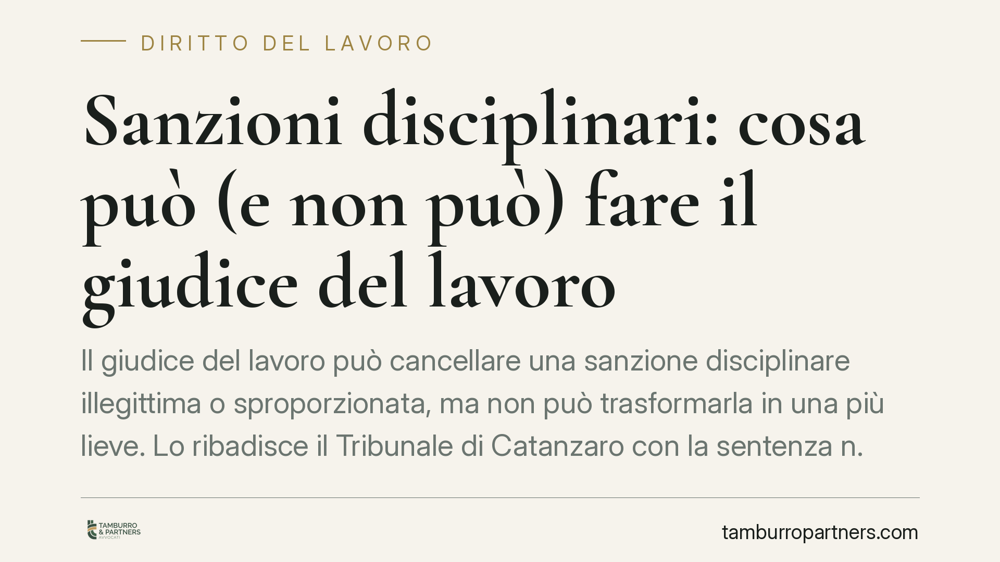

Sanzioni disciplinari: cosa può (e non può) fare il giudice del lavoro
Il giudice del lavoro può cancellare una sanzione disciplinare illegittima o sproporzionata, ma non può trasformarla in una più lieve. Lo ribadisce il Tribunale di Catanzaro con la sentenza n. 156/2026, tracciando una linea netta tra controllo di legittimità e potere datoriale. Una distinzione che incide direttamente sulle strategie difensive di lavoratori e imprese.

Il caso
Un dipendente impugna una sanzione disciplinare ritenendola eccessiva rispetto al fatto contestato. Chiede al giudice non solo di annullarla, ma in subordine di sostituirla con una misura più lieve. Il Tribunale di Catanzaro, sez. I lavoro (sentenza n. 156/2026), accoglie solo in parte la domanda: la sanzione può essere annullata se illegittima o sproporzionata, ma il giudice non può rimodularla, cioè non può "scegliere" una sanzione diversa al posto del datore.
È un punto spesso frainteso. Molti lavoratori immaginano che il giudice, ritenuta troppo severa una sospensione, possa ridurla a un rimprovero. Non è così, almeno nel lavoro privato.
Inquadramento normativo
La cornice è data da tre norme. L'art. 2106 del Codice civile àncora il potere disciplinare del datore al principio di proporzionalità: la sanzione deve essere adeguata alla gravità dell'infrazione. L'art. 7 della Legge 300/1970 (Statuto dei lavoratori) fissa le garanzie procedurali: contestazione scritta e specifica dell'addebito, diritto di difesa, termine a difesa, gradualità delle sanzioni.
Sullo sfondo, l'art. 41 della Costituzione tutela la libertà di iniziativa economica privata, da cui discende che l'organizzazione dell'impresa — e quindi la scelta della sanzione — spetta al datore, non al giudice.
Da questo equilibrio deriva la regola affermata dal Tribunale: il giudice esercita un controllo di legittimità e di proporzionalità. Verifica cioè se la procedura è stata rispettata e se la sanzione è proporzionata al fatto. Se la risposta è negativa, la sanzione cade. Ma il giudice non si sostituisce al datore nello stabilire quale sanzione sarebbe stata corretta: questo sarebbe un potere di "rimodulazione" che la legge non gli riconosce nel settore privato.
Legittimità e proporzionalità: cosa significano
Il controllo di legittimità riguarda il rispetto delle regole formali e sostanziali: contestazione tempestiva e precisa, rispetto del termine a difesa, esistenza effettiva del fatto addebitato, previsione della sanzione nel codice disciplinare o nel contratto collettivo.
Il controllo di proporzionalità riguarda invece il rapporto tra la gravità del comportamento e il peso della sanzione. Una sospensione di dieci giorni per un ritardo isolato può risultare sproporzionata; lo stesso ritardo, reiterato dopo richiami, può giustificarla.
Quando il giudice ritiene sproporzionata la sanzione, l'effetto è l'annullamento, non la riduzione. Il datore, se vuole, può riaprire il procedimento entro i limiti consentiti, ma è una sua scelta, non un ordine del giudice.
Implicazioni pratiche
Per il lavoratore, la conseguenza è concreta: impugnare una sanzione punta all'annullamento integrale. Non esiste una via di mezzo giudiziale che "ammorbidisce" la misura. La difesa deve quindi concentrarsi su vizi di procedura o sulla manifesta sproporzione.
Per il datore di lavoro, il margine di manovra è ampio nella scelta iniziale della sanzione, ma proprio per questo la scelta va costruita con attenzione: una sanzione sproporzionata non viene "salvata" da una riduzione giudiziale, ma rischia di cadere del tutto, con ricadute economiche e organizzative.
La distinzione tra pubblico e privato resta rilevante: nel pubblico impiego il quadro applicativo presenta profili propri, da valutare caso per caso.
Cosa fare in concreto
- Verifica la procedura: controlla che la contestazione sia stata scritta, specifica e tempestiva, e che il termine a difesa (di norma almeno cinque giorni) sia stato rispettato.
- Conserva ogni documento: lettera di contestazione, giustificazioni presentate, provvedimento finale e comunicazioni intermedie sono la base di qualsiasi difesa.
- Valuta la proporzionalità con dati oggettivi: confronta il fatto contestato con le previsioni del contratto collettivo e con eventuali precedenti disciplinari.
- Rispetta i termini di impugnazione: le sanzioni conservative hanno tempi stringenti, spesso regolati anche dalla contrattazione collettiva. Agisci senza attendere.
- Rivolgiti a un professionista prima di impugnare o irrogare: una valutazione preventiva riduce il rischio di contenzioso inefficace o di sanzioni annullabili.
---
*Contributo informativo a cura di Tamburro & Partners - Avv. Giuseppe Tamburro. Non costituisce parere legale.*
Ogni storia di lavoro ha i suoi tempi.
Se gestisci HR e vuoi un confronto su contenzioso, ispezioni o licenziamenti, scrivi allo studio. Ti rispondiamo entro un giorno lavorativo.